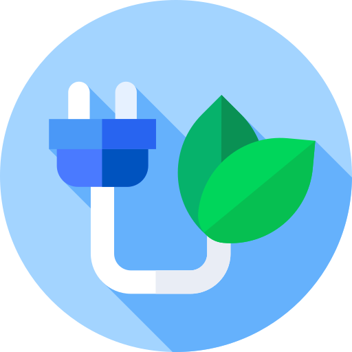
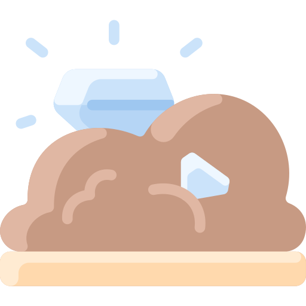

Em busca
de um mundo
mais green.


© 2023 TechGreen. Todos os direitos reservados.
A reciclagem eletrônica é essencial para um futuro sustentável. Neste guia, abordaremos diferentes tópicos, como a importância da reciclagem, o descarte responsável, a recuperação de materiais, a proteção ambiental, o impacto social, o recondicionamento e a conscientização. Vamos descobrir como podemos contribuir para um mundo melhor através da reciclagem eletrônica.
A reciclagem eletrônica desempenha um papel crucial na preservação do meio ambiente e na promoção da sustentabilidade. Com o rápido avanço da tecnologia, dispositivos eletrônicos tornaram-se parte essencial de nossas vidas, mas seu descarte inadequado pode levar a sérios impactos ambientais. Ao reciclar eletrônicos, podemos evitar a poluição do solo, da água e do ar causada pela decomposição desses materiais tóxicos em aterros sanitários. Além disso, a reciclagem de eletrônicos reduz a necessidade de extrair recursos naturais, como metais preciosos e minerais, preservando esses recursos para as gerações futuras. 
O descarte responsável de dispositivos eletrônicos é fundamental para evitar danos ao meio ambiente e à saúde pública. Muitos componentes eletrônicos contêm substâncias perigosas, como mercúrio, chumbo, cádmio e bifenilos policlorados (PCBs). Quando esses dispositivos são jogados no lixo comum, essas substâncias podem vazar e contaminar o solo e a água, causando impactos negativos na flora, fauna e até mesmo nas comunidades próximas. Portanto, é essencial descartar os eletrônicos de forma responsável, encaminhando-os para instalações de reciclagem certificadas, onde os materiais podem ser recuperados de maneira segura e adequada.
A reciclagem eletrônica permite a recuperação de materiais valiosos presentes nos dispositivos. Por exemplo, a reciclagem de computadores, celulares e outros aparelhos eletrônicos pode recuperar metais preciosos como ouro, prata e cobre, além de plásticos e vidros. Ao extrair esses materiais dos dispositivos reciclados, reduzimos a necessidade de mineração de recursos naturais, que é um processo que consome muita energia e tem um impacto significativo no meio ambiente. Além disso, a recuperação de materiais valiosos contribui para a economia circular, onde os materiais são reutilizados em novos produtos, reduzindo a demanda por recursos frescos. 
A reciclagem eletrônica desempenha um papel importante na proteção do meio ambiente. Ao evitar o descarte inadequado de eletrônicos, podemos prevenir a contaminação do solo, da água e do ar com substâncias tóxicas. Essa contaminação pode afetar negativamente a flora, a fauna e os ecossistemas locais. Além disso, a reciclagem eletrônica reduz a emissão de gases de efeito estufa e o consumo de energia necessários para produzir novos dispositivos. Ao optar pela reciclagem, estamos contribuindo para a redução da pegada de carbono e para a mitigação das mudanças climáticas.
A reciclagem eletrônica tem um impacto social positivo significativo. Ao criar uma indústria de reciclagem eletrônica, são gerados empregos diretos e indiretos em áreas como coleta, desmontagem, triagem e recuperação de materiais. Além disso, a reciclagem eletrônica pode promover a inclusão digital, fornecendo dispositivos eletrônicos recondicionados a comunidades carentes, escolas e organizações sem fins lucrativos. Isso possibilita que mais pessoas tenham acesso à tecnologia e às oportunidades que ela oferece, ajudando a diminuir a divisão digital.

Além da reciclagem, o recondicionamento e a reutilização de dispositivos eletrônicos são práticas importantes. Muitos dispositivos ainda estão em boas condições de funcionamento, mas são descartados prematuramente. Ao recondicionar esses dispositivos, eles podem ser estendidos em sua vida útil, evitando a necessidade de produzir novos aparelhos. O recondicionamento envolve a limpeza, reparo e atualização dos dispositivos, garantindo que eles estejam prontos para uso novamente. Essa abordagem reduz a quantidade de lixo eletrônico e contribui para a economia circular.

A conscientização e educação são fundamentais para promover a reciclagem eletrônica. Campanhas e programas educacionais são importantes para informar sobre a importância do descarte correto de dispositivos eletrônicos, incluindo a exclusão de dados pessoais. A educação desempenha um papel essencial na formação de uma geração consciente sobre sustentabilidade e consumo responsável. A introdução de programas educacionais nas escolas e a disponibilização de recursos sobre reciclagem eletrônica capacitam as pessoas com conhecimentos sobre os benefícios ambientais e sociais da prática. Manter a conscientização e educação constantes é crucial para tornar a reciclagem eletrônica um hábito comum. Informar as pessoas sobre os impactos negativos do descarte inadequado de dispositivos eletrônicos e apresentar alternativas sustentáveis pode promover uma mudança positiva em direção a um futuro mais sustentável.